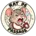

Don Tomás Clásico Robusto — La cendre tient, les fiches aussi
- Julien

Du cacao torréfié à la vieille pierreComité 81/100 - LouisUne cendre remarquable, une sous-cape à rétablirComité 73/100
Les séances du Club, leurs fiches et les observations du Comité.
Retrouvez les dégustations archivées, les comptes rendus individuels et les pièces de chaque séance.
GUICHET DES DÉGUSTATIONS
Déclarez les participants, joignez leurs fiches, les minutes et jusqu’à dix photos. Le Comité examinera le dossier avant publication.
Aucune dégustation ne correspond à ces critères.

Du cacao torréfié à la vieille pierreComité 81/100Consulter le registre des membres →
La note du Comité sur 100 évalue la précision, la cohérence et la qualité des observations du membre, à partir des pièces disponibles. La note du cigare sur 10 exprime le jugement personnel du dégustateur.
Les minutes appartiennent à la séance. Elles peuvent compléter le contexte commun et les faits techniques ; seules les observations explicitement attribuées à un membre enrichissent son évaluation personnelle. Une remarque sans auteur reste un élément de contexte.
L’absence de minutes ne retire aucun point. Leur présence seule n’en ajoute aucun. Chaque compte rendu indique les pièces utilisées et, lorsqu’il existe des minutes, leur apport individuel à l’évaluation. La note est réexaminée dans les critères concernés, avec une date de révision.
Le barème présenté avec la première fiche est un barème d’analyse proposé ; il ne constitue pas un règlement préexistant du Club. Une note ne vaut pas changement de grade.